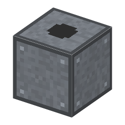

説明
①子ども マクデブルクの半球：空気をぬくと、馬16頭で引いても離れなかった。
③大人 1回ごとにボイルの法則どおり：容器の空気が空のシリンダーに広がり、弁を閉じてその分を外へ押し出す。圧力は 0.8倍、0.64倍、0.51倍…と下がるので、最初の数回がいちばん効く。
④ガチ 限界の原因は「死容積」：押し切ってもピストンと弁のすき間に空気が残り、次に引いたとき容器へもどる。さらに革のパッキンから漏れる。ゲーリケが届いたのは数百 Pa〜1kPa 程度。もっと良い真空にはシュプレンゲルの水銀ポンプ（1865）や拡散ポンプ（1915）が必要だった。